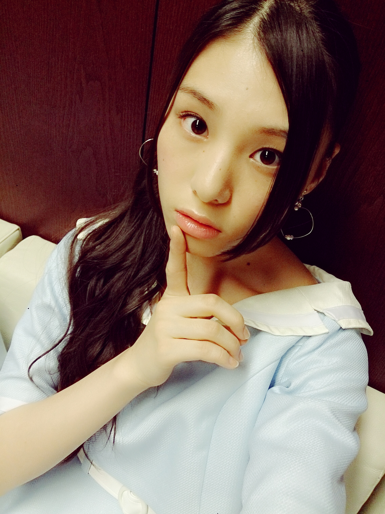
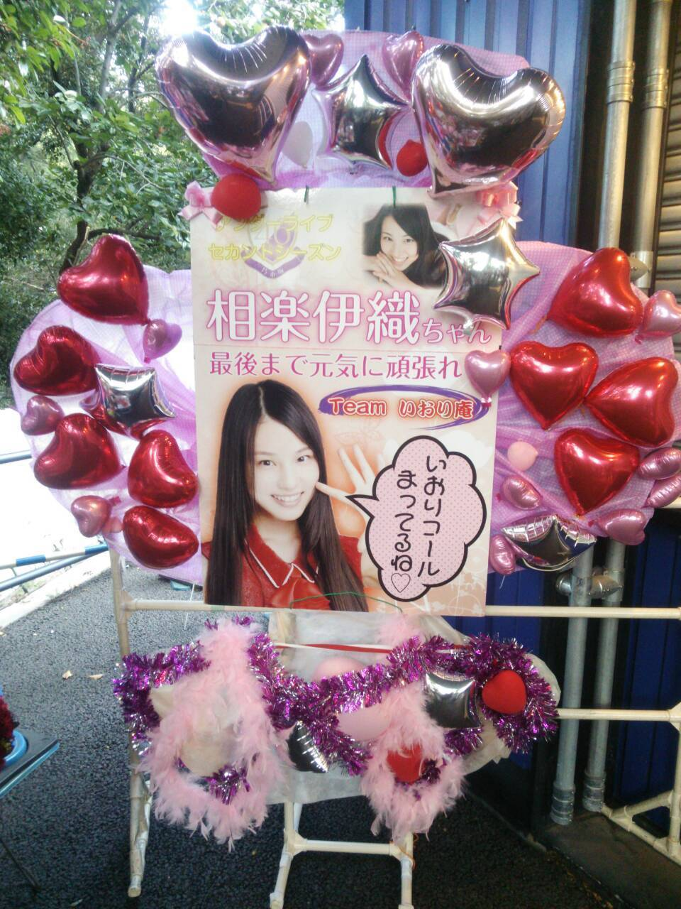
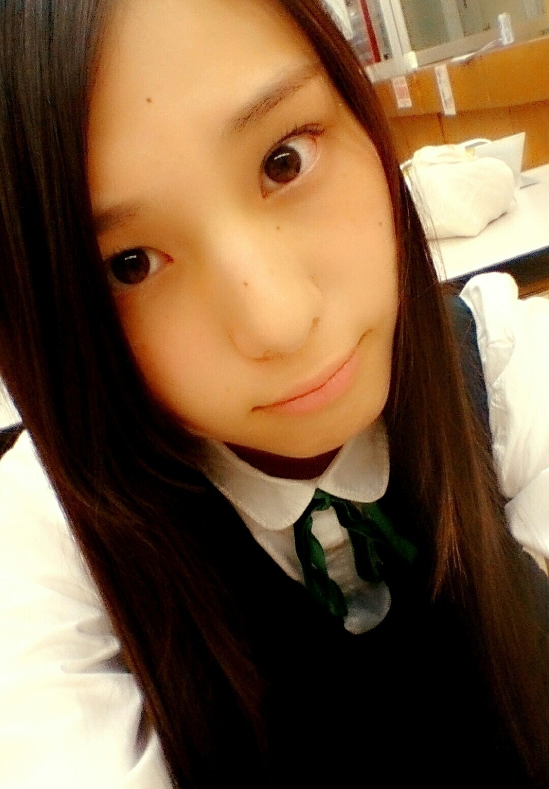
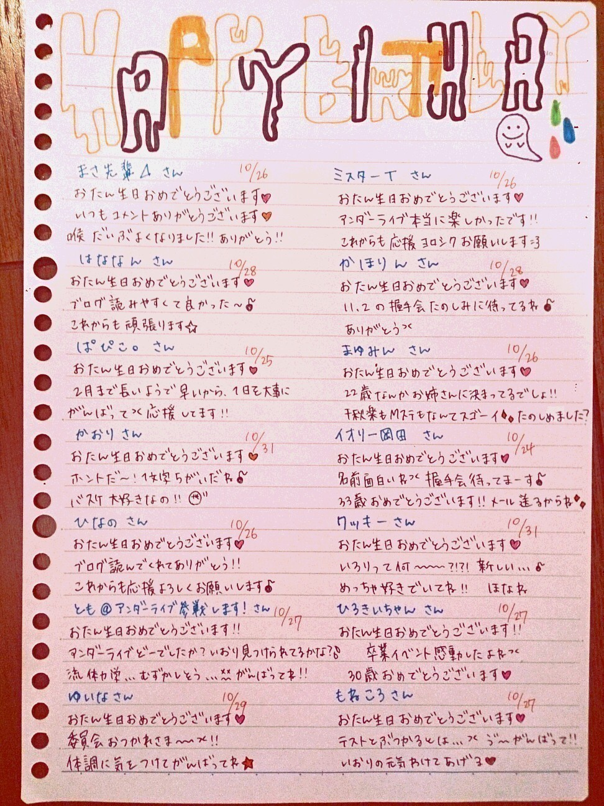
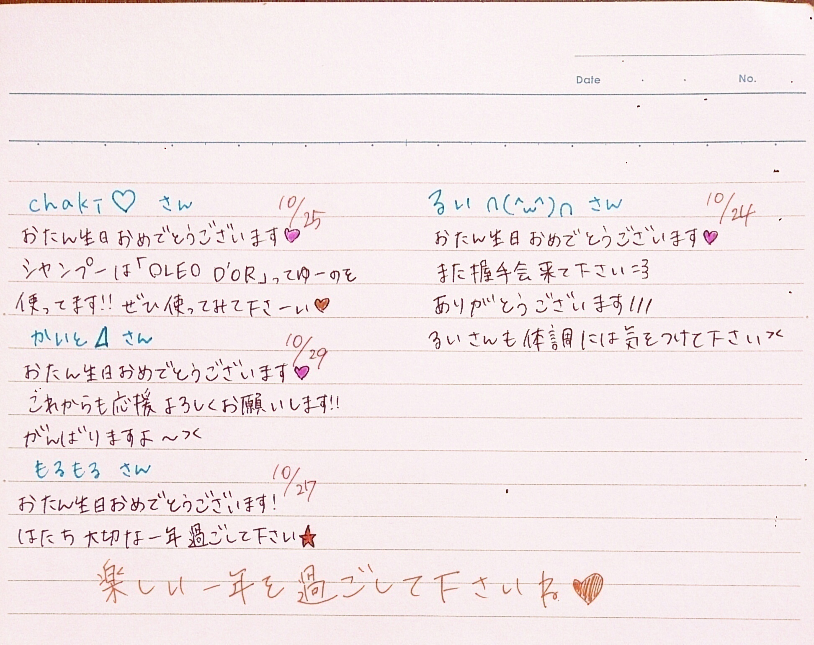
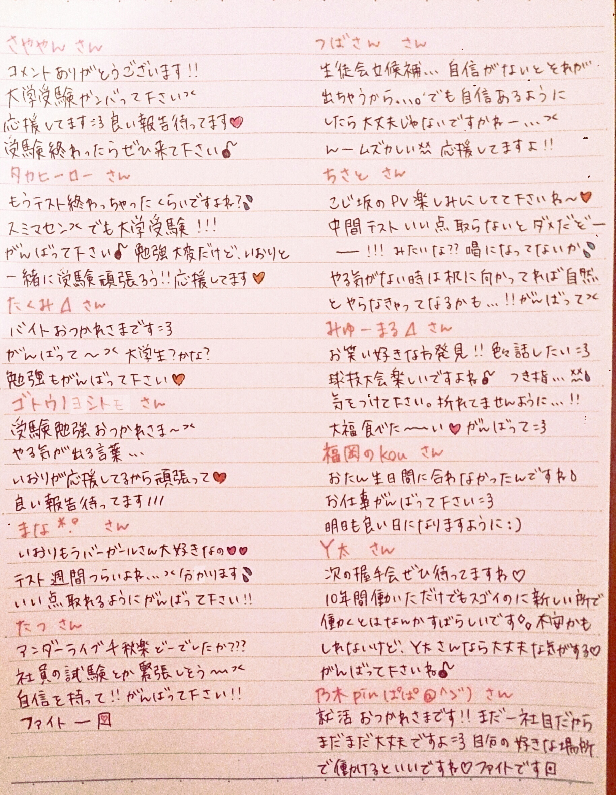
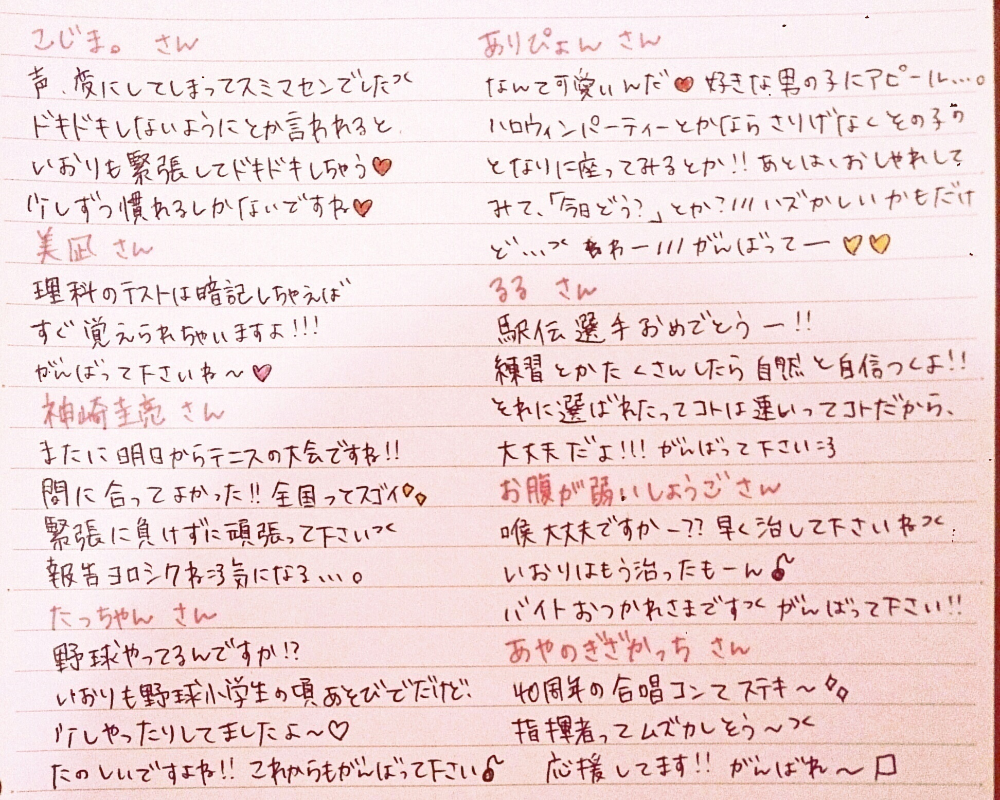
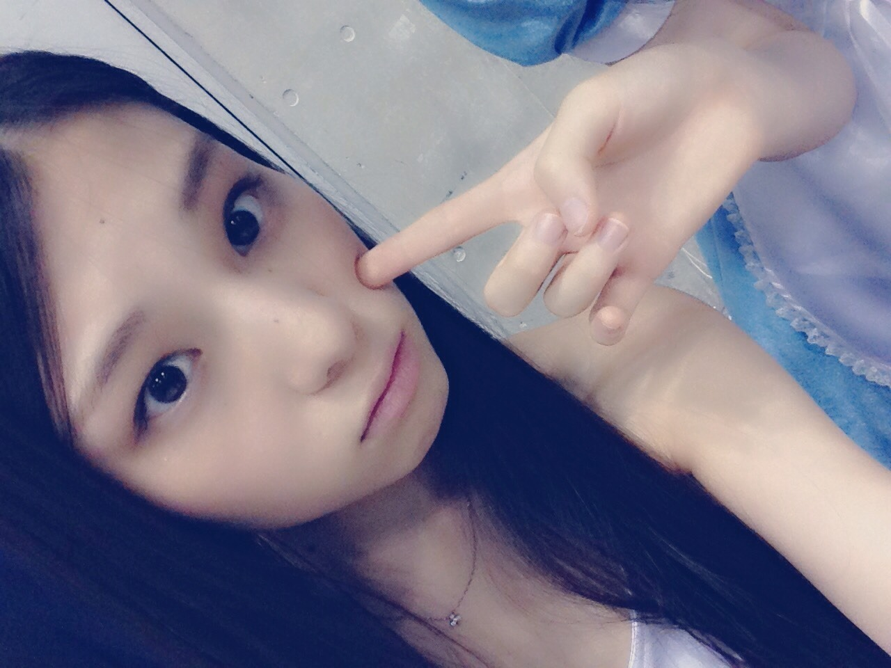

| 2014/10 25 Sat | (*いおり_(．．*)vol.10) |
みなさんこんばんはー！
高校2年生16歳
さがらいおりです！

アンダーライブ千秋楽
涙ころの時に会場のサイリウムが
ねねさんカラーになっていたのを、
袖から見てて、すごく感動しました(;_;)
まいちゅんすんごい泣いてた(;_;)
スペシャル公演はファンの方が
クイズに参加したり
伊藤ちゃんずの孤独兄弟やったり
寧々さんへのサプライズがあったり
色んな楽しみがありました♪♪
2期生曲はダンケシェーン！！
おもいっきり踊りました♪
生駒さんにも良かったよって
言っていただけました♥
一実さんにも褒めてもらえて嬉しかった♥
推しタオルとかも見えて、
ライブの楽しさを改めて感じることができました♪♪
18 公演は長いだろうなーって思ってたら
もう終わってたって感じで
ホントに楽しかったです！！
今回のライブでは
また色々な課題が見つかって
もっと頑張ろうって思えました *˙︶˙*)ﾉ"

こーーんなに大きなものも
送ってくださって
ありがとうございます♡
かわいい(´,,•ω•,,)♡
ママが撮ってくれました！
10 月の初めにスタートしたのに
気付けばあと少しで 11 月
早いねー、、
いおりは冬が好きだから
全然いいけどね：）

~いおり庵~
 好きなお笑い番組は？
好きなお笑い番組は？
毎週録画してる番組は、
めちゃイケ
イッテQ
世界仰天ニュース
アメトーーク
ロンドンハーツ
ガキ使
しくじり先生
ミレニアムズ
オサレもん
これくらい！
とゆーか
うつけもん知ってる人多くて
ビックリした！
嬉しかったよー♥
ちなみに今期のドラマは
Nのために
ファーストクラス
ごめんね青春！
を見てるよ！！
ショートにしたことある？
小学生の時は3年生～5年生くらいまで
ショートだった！
あと、中2のときもショートだった！
後はずっと長いままだよ♪♪
お誕生日の方に
メッセージ書きました(´,,•ω•,,)♡


応援メッセージも書きました↓


この前、中学校の時の友だちに会って
KOCの話して盛り上がった(´▽｀)
お笑いの話出来る人
周りにあんまりいないから楽しかった♡♡
今度一緒に劇場行く約束したの♡
わーたのしみたのしみ♪♪
あ、モバメのアドバイス
ありがとうございます♡
これからいおりは土曜日のブログ更新になるので、よろしくお願いします(>_<)！

絢音が月曜日で
みり愛が木曜日で
純奈が金曜日だよ
i o r i .

コメント(461)
2014/10/25 19:48